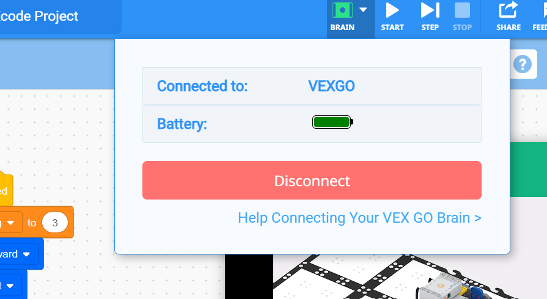
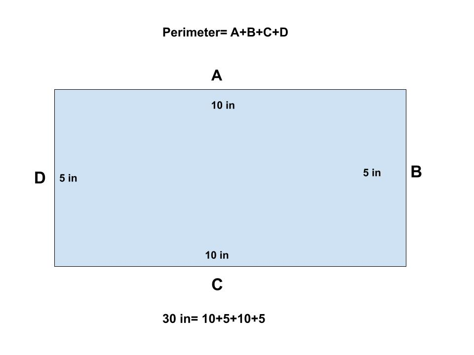
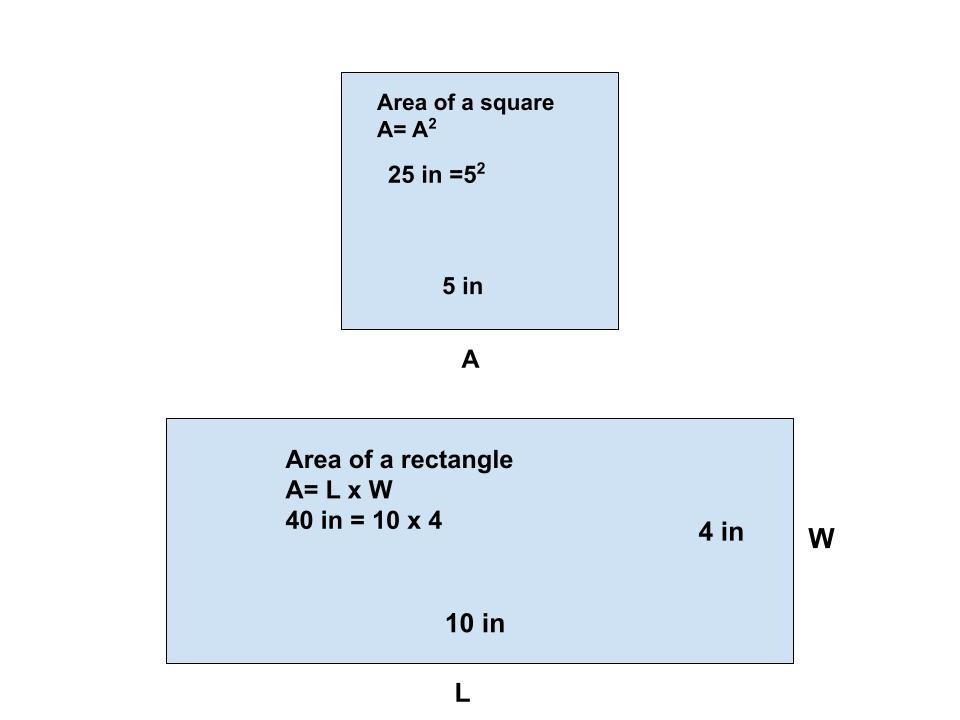

Do It! VEX GO: Protect Your Garden
 The Challenge
The Challenge
Your challenge is to create a garden using your choice of materials. Then, you will build a “farmer” with VEX GO and program him/her to secure the perimeter and area of your garden.
Getting Started
VEXcode GO web based programming or VEXcode GO app.
Make sure you are using VEXcode GO.
Firmware Update
Read here how to update your firmware.
Connect the Brain to VEXcode GO
Make sure your brain is flashing green.

Project Steps
-
Build Your Garden
-
Measure Your Garden
-
Build Farmer Base
- Program Your Farmer
- Record Your Farmer
Build Your Garden
Decide what materials will be best to build your garden. You could use recycled materials such as cardboard, egg cartons, etc. You could also use building materials like Legos or K’Nex.
Measure Your Garden
Measure the perimeter. To find the perimeter of a rectangle or a square you have to add the lengths of all four sides together. This is an equation for perimeter: P = a+b+c+d.
Next, measure the area. To find the area of a rectangle you multiply the length by the width. This is an equation for the area of a rectangle: A =L x W. To find the area of a square you multiply the length of one side by itself. The equation for the area of a square is A = L x L or A = L2.


Build Farmer Base
To create your farmer base, start by following these directions. After, you may add on or remove pieces to make your farmer unique.
Program Your Farmer
Choose how you want to program your farmer. Maybe you will program your farmer to secure the perimeter to check for breaks in the fence. Maybe you will program your farmer to walk the area of the garden to find and pull weeds. To program your farmer click here and follow the instructions.
Record Your Farmer
Record your farmer moving around your garden for your project submission. Don’t forget to include:
- The farmer completing the whole program.
- The programming on your screen.
- An explanation of what your farmer is doing.